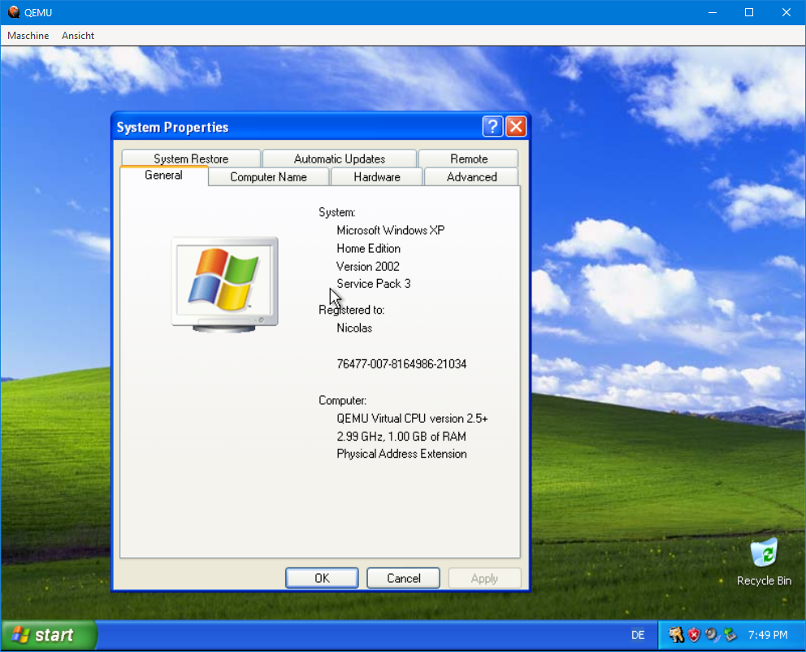

Windows XP has been developed by Microsoft under the codename "Whistler" and released on October 25th, 2001. Although it's EOL since 2014, a few people still use it as their daily driver (not recommended). This is why we just have to do this!
Windows XP Home Edition SP3 running on QEMU. (Nicolas Lucien)
Made by lucien-rowan (aka Nicolas Lucien). (C) 2022 lucien-rowan. All rights reserved.
Link: https://youtu.be/Nh3jyKnKxlo
Before you can install Windows XP, you must meet the following requirements:
Now, let's create a virtual machine. With EmuGUI opened, click on "New Virtual Machine" and choose the following:
Now, everything should be fairly simple to get by yourself but here's the most important anyway.
Everything else should be pretty easy.
This website and its content are licensed under BSD-3 Clause if not stated otherwise. (C) 2022 Nicolas Lucien and EmuGUI contributors. All rights reserved.